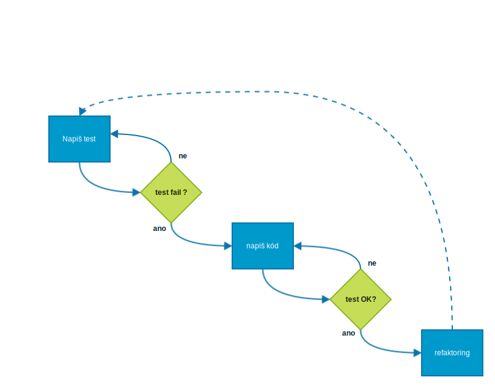
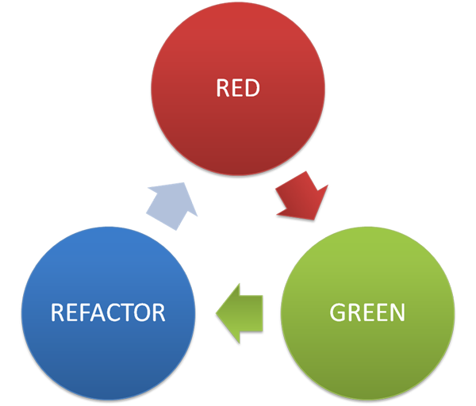

proč psát testy?
proč psát testy dříve než samotný program?
rozhraní, funkcionality či chování aplikace
Nejdřív je test - když je program hotový nemusí se už psát testy.
což je nuda a nikdo to nedělá rád...
Nejdřív musíte vymyslet rozhraní programu.
což vás donutí nad ním opravdu přemýšlet...
testy fungují - máte jistotu že program dělá co má.
když jsou testy dobře napsané
můžete vesele refaktorovat
prostě ti to zkuste a uvidíte...


kolik kódu pokrýt testy
100%, 50%, 75% ?
existuje řada druhů testů: jednotkové, funkcionální, integrační, systémové, akceptační...
základ pro programátora
Unit test by měl být: rychlý, spolehlivý, izolovaný a čistý kód.
Doctest
UnitTest
Nose
je to všechno?
Behavior Driven - píšeme scénáře.
př: když jako uživatel kliknu na tlačítko 1 měla by se na displeji kalkulačky přidat jednička
co ještě umí?
autorun - watch
balíček pytest-xdist
doctest
pytest.ini
TDD ukázka - řešení úkolů 2 a 3
Us e a spacebar or arrow keys to navigate